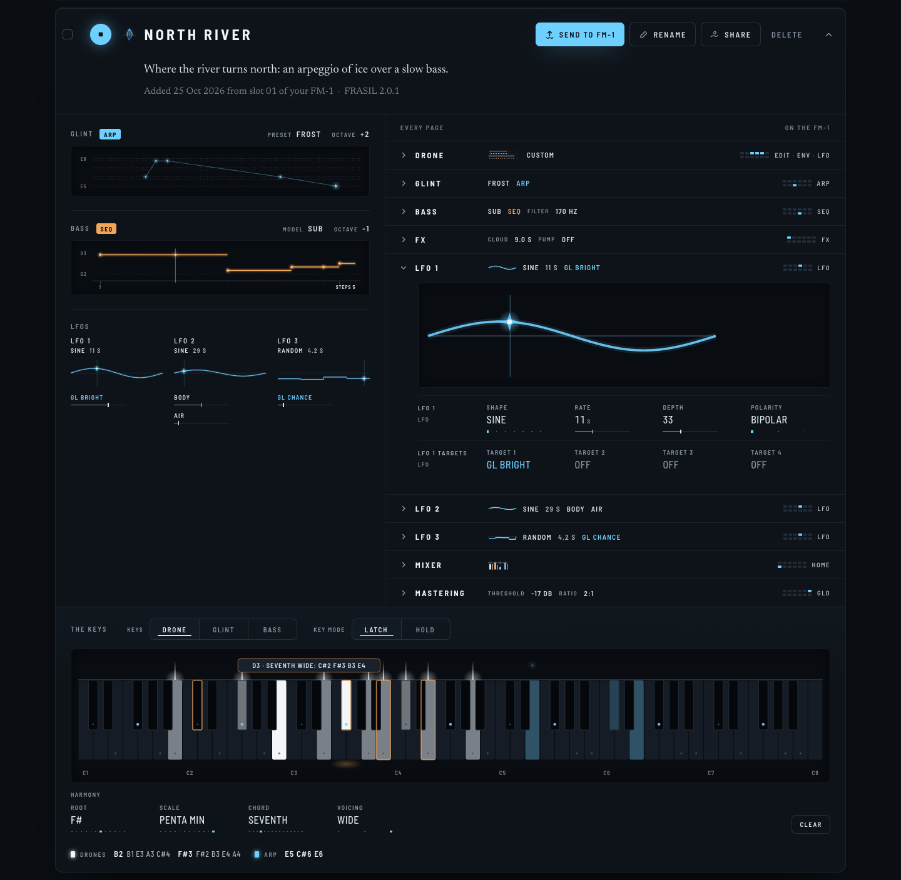
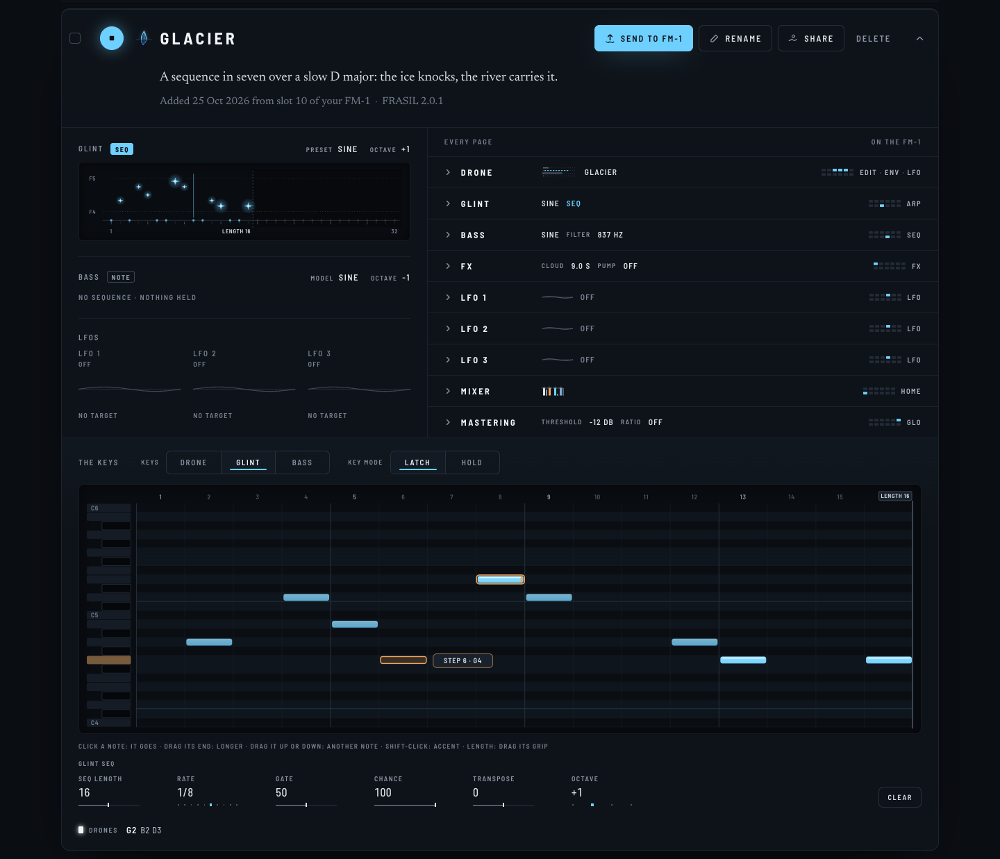
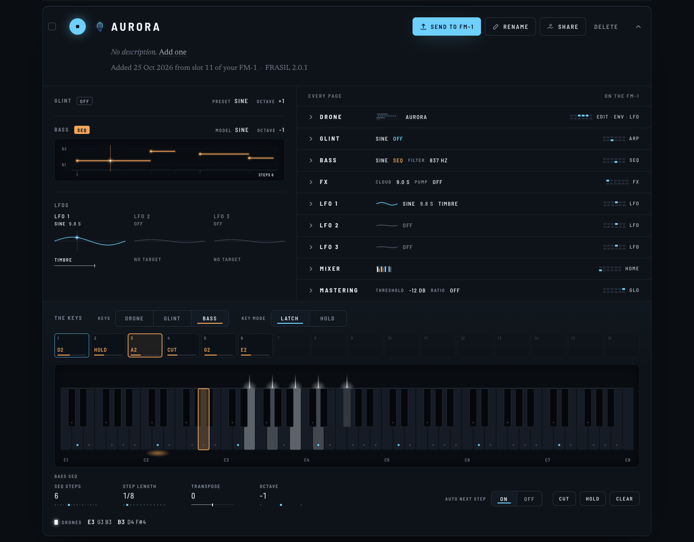

The card laid out again. At the left, one column of what moves: GLINT's walk or sequence, the bass's
sequence under it, the three LFOs abreast under them. At the right, every page, wider. At the bottom, the whole width,
THE KEYS: what the keys play (DRONE, GLINT, BASS, as KEYS on the FM-1), how (KEY MODE: LATCH or HOLD), a keyboard
C1 to C8, and under it that track's own settings. Each shard here really plays; the keys light with it.
GLINT ON ARP: BUILD THE ARPEGGIO WITH THE MOUSE
40NORTH RIVER. KEYS on GLINT, KEY MODE on LATCH:
a key clicked joins the arpeggio (ice), clicked again it leaves; on HOLD it plays while pressed, nothing kept. Under
the keys, the arpeggio's own settings (MODE, RATE, RANGE, CHANCE, OCTAVE) and CLEAR. The latched drones and the bass
stay drawn, dimmer, with the scale's notes marked (the root ice). With every page's sections closed, the two columns
end together.
THE DRONE: CHORDS AS HARMONY MAKES THEM

41KEYS on DRONE: HARMONY comes down here (ROOT,
SCALE, CHORD, VOICING; CHORD on SINGLE for a single note) and leaves the pages at the right. The key under the mouse
shows in lamp the chord a click would latch (D3: SEVENTH WIDE in F# PENTA MIN). LFO 1 opened at the right: its
picture first, live, as BASS shows its sequence, so an LFO you turn is seen moving even with the left column out of
view.
A SEQUENCE: A STEP CHOSEN, A KEY WRITES IT

45GLACIER, GLINT on SEQ, as a grid (your
ask): a column a step, a row a note, the keys upright at the left. One note a step, as GLINT plays them: a click in a
column puts the note there (the one it had goes); a click on a note takes it away; its end dragged makes it longer
(the steps after it TIEs); dragged up or down, another note; Shift-click, ACCENT (brighter). LENGTH has its grip at
its end (16 steps, or 32). The scale's rows lighter, the root's an ice line; the column playing lit, live. The
cell under the mouse shows in lamp the note a click puts there.42The first version, for comparison: the
steps in a row over the keys; a step selected, a key clicked puts its note into it, and the next step is selected.
It stays for the bass (43), whose steps each have a length.

43AURORA, KEYS on BASS: the bass's sixteen steps
(its SEQ STEPS played; each one's STEP LENGTH a line under it), step 3 chosen; CUT, HOLD; SEQ STEPS, the chosen step's
STEP LENGTH, TRANSPOSE, OCTAVE. AUTO NEXT STEP on: a key clicked writes the step selected, then the next one is; off,
the same step stays selected. The bass's sequence is now in the left column, under GLINT.
A PHONE
44The keys scroll sideways (three octaves on the
screen), opened where the notes are.
TO DECIDE
The small WHAT PLAYS keyboard at the top goes: THE KEYS show what plays, live, and edit it.
HARMONY leaves the pages at the right for THE KEYS (DRONE), as you asked; GLINT's and BASS's settings stay
in their pages too (THE KEYS show the ones for playing).
The keyboard always C1 to C8, room to write high.
GLINT's sequence in the grid (45); the bass's, its steps over the keys (43).